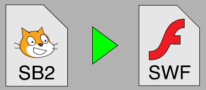
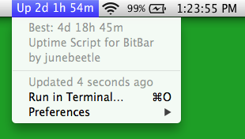
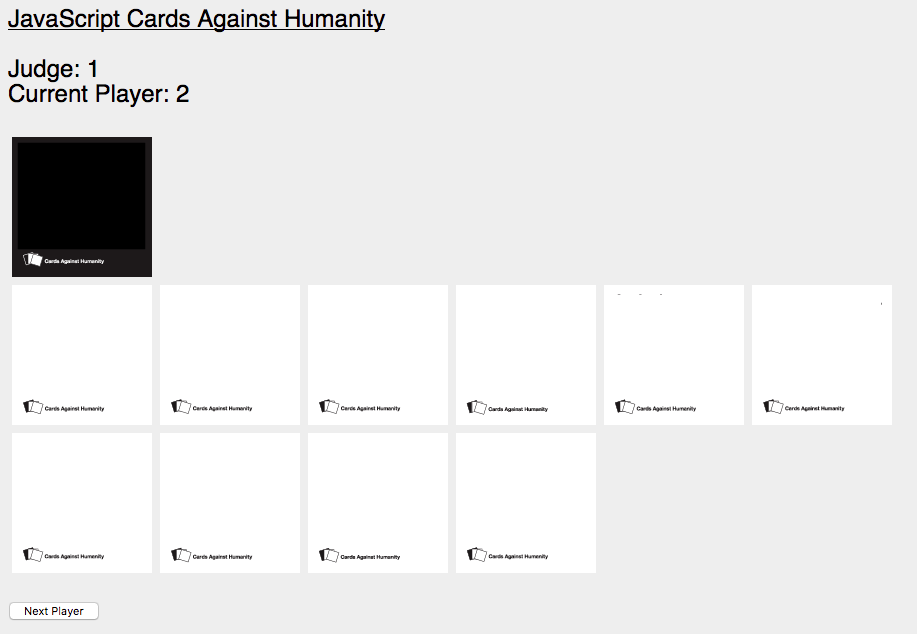
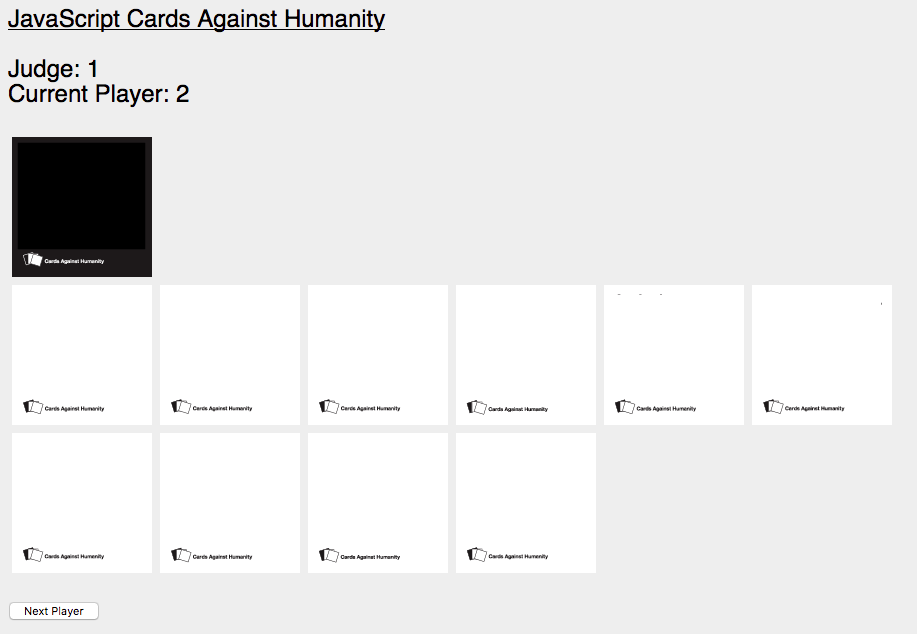

All Projects and Pages
Here's a list of all the pages that are currently available on this website! I've given each page a score from 1-5 which represents how complete that project is. A one is very unfinished; expect code with no explanation, text files, and things that don't work. A five is a polished, fully functioning piece of software that is fully documented and should work well. Most pages will be somewhere in between. Enjoy!
[5] Scratch to SWF Converter

This project lets you convert a Scratch project to an Adobe Flash file, allowing you to share things made with what is otherwise a pretty limiting language. It automatically packages the project inside a copy of the official Scratch interpreter, running it exactly as Scratch would, but without showing any of the scripts or requiring you to install anything.
[3] Uptime BitBar Script

Just a little menu bar plugin for BitBar. It lets you see your Mac's current uptime and automatically saves and displays your "highscore". It is simple and reliable, although a bit of a pain to install if you don't have BitBar.
[4] Maze Extended
 A complete re-implementation of my popular Scratch game, Maze. Experience the same puzzle, but with more sophisticated graphics, slightly less boring music, and an extended map! If you liked the first one but found it a bit easy, you'll enjoy Maze Extended. Uses my new platformer engine, which is currently in Alpha.
[3] Boxheads Level Editor
A complete re-implementation of my popular Scratch game, Maze. Experience the same puzzle, but with more sophisticated graphics, slightly less boring music, and an extended map! If you liked the first one but found it a bit easy, you'll enjoy Maze Extended. Uses my new platformer engine, which is currently in Alpha.
[3] Boxheads Level Editor
 A simple level editor for the Flash game Boxhead 2 Play by Sean Cooper. It lets you make your own maps and then save a modified copy of the Flash file where you can play them as if they are part of the game... because they are! You can also save and re-import the level design for later use.
[2] JavaScript Cards Against Humanity

A JavaScript/HTML implementation of Cards Against Humanity, a card game that is like Apples to Apples, but for terrible people. Currently only supports playing on one computer, but local multiplayer is on its way. Warning: some cards are very offensive and/or not suitable for
A simple level editor for the Flash game Boxhead 2 Play by Sean Cooper. It lets you make your own maps and then save a modified copy of the Flash file where you can play them as if they are part of the game... because they are! You can also save and re-import the level design for later use.
[2] JavaScript Cards Against Humanity

A JavaScript/HTML implementation of Cards Against Humanity, a card game that is like Apples to Apples, but for terrible people. Currently only supports playing on one computer, but local multiplayer is on its way. Warning: some cards are very offensive and/or not suitable for young children anybody.